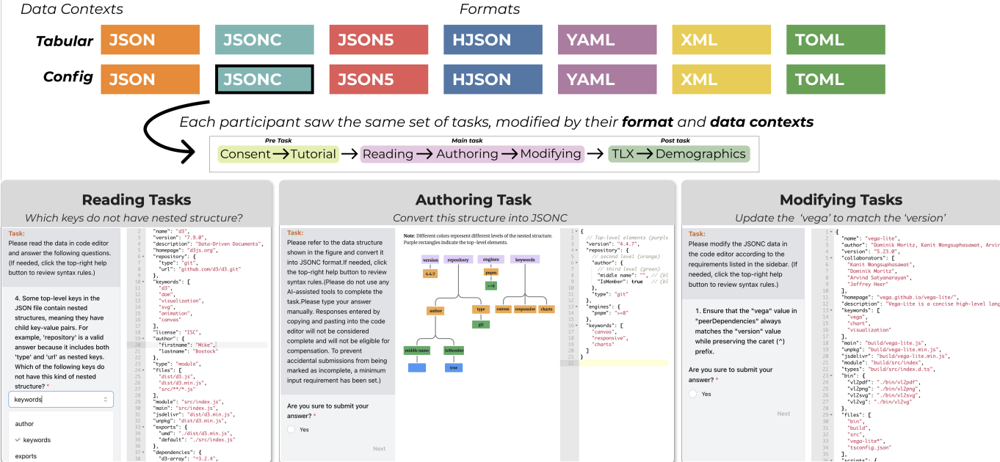
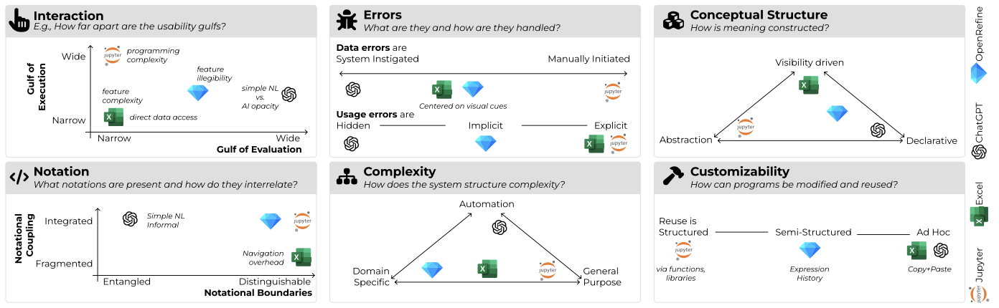
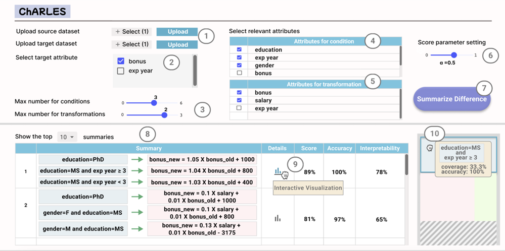
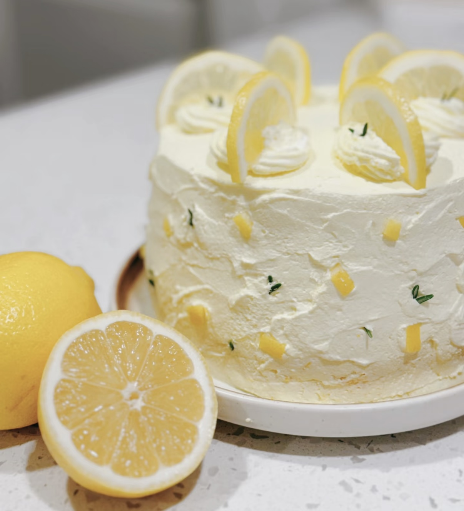
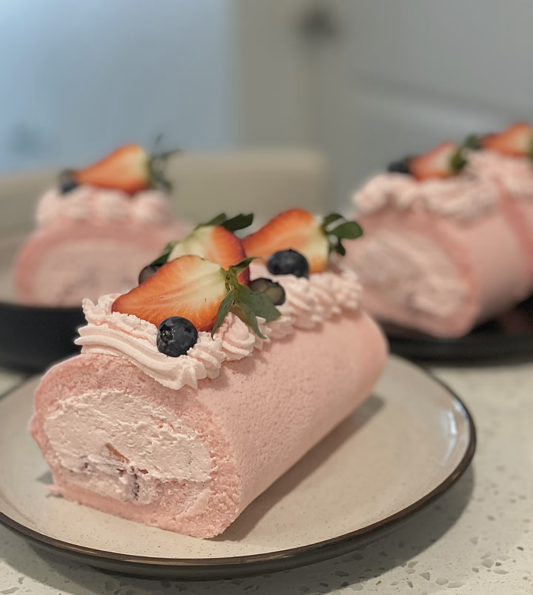

Reading Between the Curly Braces: On Textual Data Serialization Format Usability
— IEEE Symposium on Visual Languages and Human Centered Computing (VL/HCC) 2026
PhD Student in Computing
University of Utah
I’m a 4th-year PhD student advised by Andrew McNutt.
My research lies at the intersection of human–computer interaction, data visualization, and programming interfaces. I study how the design of data tools shapes the ways people understand, transform, and reason about data, with the goal of making complex data work more transparent, expressive, and approachable.
I earned a BS in Information Management and Systems from East China Normal University and an MS in Information Science from the University of Wisconsin–Madison.
I am actively seeking Research Internship Opportunities, including both summer and off-cycle positions during the fall, winter, or spring. I would love to connect—please feel free to reach out if you know of a relevant opportunity or are interested in discussing a potential collaboration!

— IEEE Symposium on Visual Languages and Human Centered Computing (VL/HCC) 2026

— IEEE Symposium on Visual Languages and Human Centered Computing (VL/HCC) 2026

— ACM SIGMOD Conference, Demo Track, 2025
No posters listed yet.
A life outside the lab, collected through places, movement, food, and music.
I love traveling and documenting the places I visit through photography. Each journey gives me a chance to encounter new landscapes, cultures, and perspectives.
When I am not working, you can often find me skiing or playing tennis. I enjoy both the thrill of the slopes and the rhythm of a good rally.
I enjoy baking and experimenting with new recipes—especially when there are friends around to share the results.
Music is a constant part of my life, whether I am working, traveling, or relaxing. I also have a very soft spot for Momonga.

A lemon cake for a slow afternoon A small recipe note with photographs, adjustments, and things to try next time. Future note
Things worth remembering lately Tiny discoveries, photographs, and ordinary details collected along the way. Future note